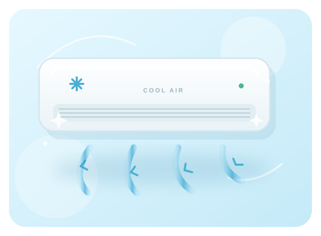

AC terasa kurang dingin
Ruangan terasa panas atau pendinginan tidak seperti biasanya sehingga aktivitas menjadi kurang nyaman.
Solusi cleaning, perbaikan, dan pemasangan AC untuk rumah, kantor, hingga tempat usaha. Ceritakan kebutuhan AC Anda kepada tim Mitra Jaya Cool.

Beberapa kondisi berikut mungkin pernah Anda alami. Perawatan dan pemeriksaan yang tepat dapat membantu menjaga AC tetap terawat.
Ruangan terasa panas atau pendinginan tidak seperti biasanya sehingga aktivitas menjadi kurang nyaman.
Filter dan bagian AC dapat kotor seiring pemakaian. Kondisi ini membuat AC perlu dibersihkan secara berkala.
Memindahkan unit, memasang AC baru, atau menangani gangguan AC membutuhkan bantuan tenaga yang sesuai.
Dari perawatan rutin sampai pemasangan, pilih layanan yang sesuai dengan kondisi AC dan kebutuhan ruangan Anda.
Pembersihan filter dan bagian unit AC sesuai kebutuhan agar debu dan kotoran yang menumpuk dapat ditangani.
Tanyakan layananPembongkaran dan pemasangan kembali unit AC ketika pindah rumah, kantor, atau menata ulang ruangan.
Tanyakan layananPemeriksaan kondisi refrigeran dan pengisian sesuai hasil pengecekan serta spesifikasi unit AC.
Tanyakan layananPemeriksaan awal dan penanganan gangguan AC berdasarkan keluhan serta kondisi unit di lokasi.
Tanyakan layananBantuan pemasangan unit AC baru untuk rumah, kantor, maupun tempat usaha. Detail kebutuhan dapat dikonsultasikan terlebih dahulu.
Tanyakan layananTiga langkah sederhana untuk menyampaikan kebutuhan layanan AC Anda.
Tentukan jenis layanan AC yang Anda perlukan.
Isi formulir dan lanjutkan percakapan melalui WhatsApp.
Konfirmasikan lokasi, jadwal, dan kebutuhan pekerjaan bersama tim.
Perawatan AC membantu menjaga kebersihan unit dan mendukung kinerja pendinginan. Hasil setiap layanan dapat berbeda, tergantung kondisi unit dan kebutuhan penanganannya.
Konsultasikan AC AndaUnit dan filter dapat dipenuhi debu serta kotoran.
Kotoran dibersihkan sesuai lingkup layanan.
Ilustrasi edukatif, bukan dokumentasi hasil pekerjaan pelanggan.
Proses konsultasi kebutuhan cleaning AC terasa lebih mudah karena saya bisa menjelaskan keluhan terlebih dahulu.
Contoh Pelanggan Rumah TanggaInformasi layanan membantu kami memahami pilihan perawatan dan pemasangan AC untuk kebutuhan kantor.
Contoh Pelanggan PerkantoranCeritakan kebutuhan AC Anda melalui formulir. Kami akan menyiapkan pesan WhatsApp agar Anda dapat melanjutkan konsultasi dengan lebih mudah.
*Ketersediaan teknisi dan jadwal perlu dikonfirmasi sesuai wilayah pelanggan.
Pilih tab untuk melihat rancangan data (ERD), alur permintaan layanan (flowchart), dan logika program (pseudocode) yang mendasari landing page ini.
Catatan implementasi: Website saat ini merupakan prototipe front-end. Data formulir tidak disimpan ke database; JavaScript hanya menyiapkan pesan dan membuka WhatsApp. Flowchart dan tiga pseudocode pertama mengikuti perilaku website saat ini, sedangkan ERD dan pseudocode “Simpan Data (rencana)” adalah rancangan apabila sistem dikembangkan dengan penyimpanan data pada tahap berikutnya.
Enam entitas mencatat pelanggan, permintaan layanan, jadwal kunjungan, detail permintaan, layanan, dan kategorinya. Satu permintaan dapat memuat banyak layanan, dan setiap detail menunjuk ke satu layanan.
PK Primary Key (kunci utama)FK Foreign Key (kunci penghubung)1 satuN banyak
Relasi: Satu pelanggan dapat membuat banyak permintaan layanan (1:N). Setiap permintaan memiliki satu jadwal kunjungan (1:1) dan banyak detail permintaan (1:N). Setiap detail menunjuk ke satu layanan (N:1), sedangkan satu kategori memuat banyak layanan (1:N).
Alur pengunjung dari memilih layanan sampai tim menerima permintaan. Dua pemeriksaan menentukan jalannya: kelengkapan kolom wajib dan pembukaan tab WhatsApp.
Penting: Tombol website tidak mengirim pesan secara otomatis. Pengunjung tetap perlu memeriksa draf pesan dan menekan tombol Kirim di WhatsApp. Jika kolom belum lengkap, alur kembali ke formulir; jika tab diblokir browser, pengunjung memakai tautan cadangan.
Tiga prosedur pertama menggambarkan proses pada
script.js. Prosedur keempat adalah rencana
pengembangan yang memakai tabel pada ERD.
Output: Pengunjung diarahkan ke WhatsApp dengan draf pesan berisi data formulir. Pengiriman final dilakukan oleh pengunjung di aplikasi WhatsApp.